vis-2-perception.pdf
Lecture นี้ต่อยอดจากกรอบคิด Effective/Convincing/Insightful ใน Lesson 1 ให้เป็นรูปธรรมขึ้น: Good = Functional (มาจาก Effective) และ Good = Truthful (มาจาก Convincing) แล้วอธิบายว่า "การรับรู้ทางสายตา" (perception) และ "ตัวแปรเชิงภาพ" (visual variables) คือเครื่องมือที่ทำให้ visualization ทำหน้าที่ทั้งสองอย่างนี้ได้.
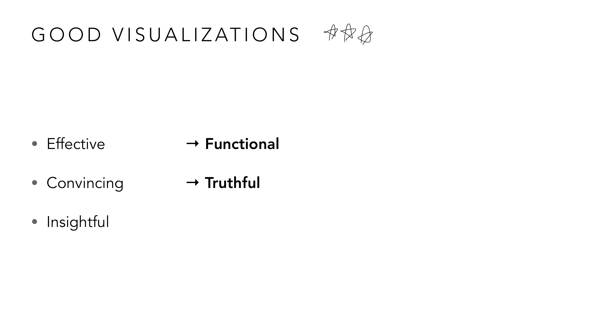
สังเกตว่าบรรทัด "Insightful" ในสไลด์นี้ยังไม่มีคำตอบต่อท้าย ทั้งที่ Effective กับ Convincing มีคำตอบชัดเจนแล้ว — นี่ไม่ใช่ความผิดพลาด แต่เป็นช่องว่างที่จงใจเปิดค้างไว้ เพราะคำตอบของมันต้องรอทฤษฎีจาก Lesson 3 (Mackinlay 1986) มาเติมให้ ระหว่างนี้จำไว้แค่ว่า Good visualization วันนี้มี 2 เสาที่ตอบได้แล้ว: Functional (ใช้งานได้จริง ตรงกับ Effective) กับ Truthful (ไม่บิดเบือนข้อมูล ตรงกับ Convincing).
ก่อนเข้าเนื้อหาทฤษฎี อาจารย์เปิดด้วยตัวอย่างจากข่าวจริงล่าสุด (2025) — การเปิดตัว GPT-5 ของ OpenAI ที่มีคนวิจารณ์กราฟในงานแถลงข่าวทันทีที่จบ:
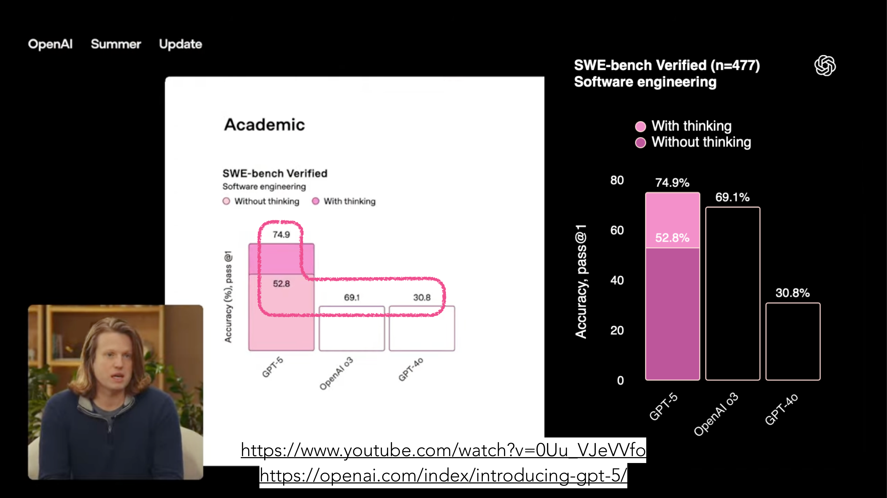
ตัวเลขจริง: GPT-5 ทำได้ 74.9% (แบ่งเป็นสีชมพูอ่อน "without thinking" 52.8% บวกสีชมพูเข้มด้านบนอีก 22.1% เมื่อเปิด "with thinking") เทียบกับ OpenAI o3 ที่ 69.1% และ GPT-4o ที่ 30.8% — ตัวเลข 74.9% มากกว่า 69.1% จริง แต่สังเกตว่ามีแค่แท่ง GPT-5 เท่านั้นที่ถูกวาดแบบแบ่งสองสี (stacked) ส่วนแท่งคู่แข่งเป็นสีเดียวล้วน — การแบ่งสีสองชั้นทำให้แท่ง GPT-5 "ดูมีเนื้อหา/ซับซ้อนกว่า" แท่งอื่นโดยไม่ได้ตั้งใจ (หรือตั้งใจ) ทั้งที่ส่วนต่าง 74.9% กับ 69.1% จริง ๆ ไม่ได้ห่างกันมาก — นี่คือตัวอย่างว่าแม้ตัวเลขจะไม่โกหก แต่การเลือก "จะแบ่งสีแท่งไหนบ้าง" ก็ยังเอนเอียงการรับรู้ได้.
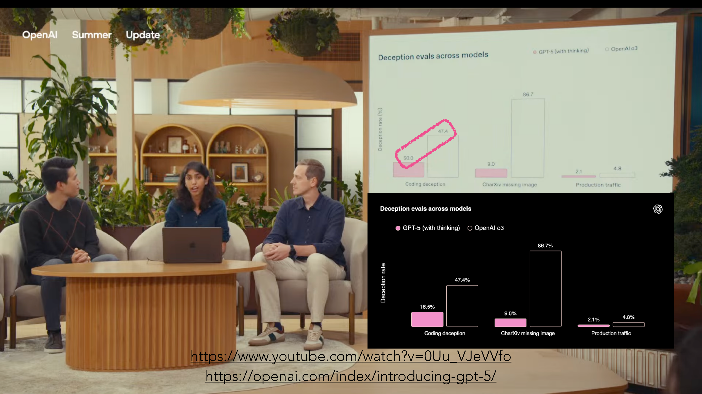
นี่คือจุดที่น่าสนใจกว่าเดิม: กราฟ "Coding deception" เวอร์ชันที่ฉายสดในงานแถลงข่าว (บนสุด) แสดงว่า GPT-5 (with thinking) มีอัตรา deception 50.0% แทบจะเท่ากับ o3 ที่ 47.4% — แต่กราฟชุดเดียวกันที่โพสต์ทางการบนเว็บ OpenAI ภายหลัง (ล่างสุด) กลับแสดงตัวเลข GPT-5 อยู่ที่ 16.5% เท่านั้น ต่างจากตัวเลขในงานแถลงสดเกือบ 3 เท่า ทั้งที่เป็นหมวด "Coding deception" เดียวกันเป๊ะ — ไม่ว่าสาเหตุจะเป็นการแก้บั๊กหรือความผิดพลาดตอนเตรียมสไลด์ บทเรียนสำหรับนักวิเคราะห์ visualization คือ: ก่อนเชื่อตัวเลขในกราฟใด ๆ (แม้จะมาจากบริษัทระดับโลกในงานแถลงข่าวใหญ่) ควรเช็คแหล่งอ้างอิงทางการเสมอ อย่าเชื่อภาพที่เห็นครั้งเดียวจบ.
ตัวอย่างที่สามแสดงว่า channel หลายตัวใช้ร่วมกันอย่างสมเหตุสมผลก็ทำให้ข้อมูลซับซ้อนเข้าใจง่ายได้:
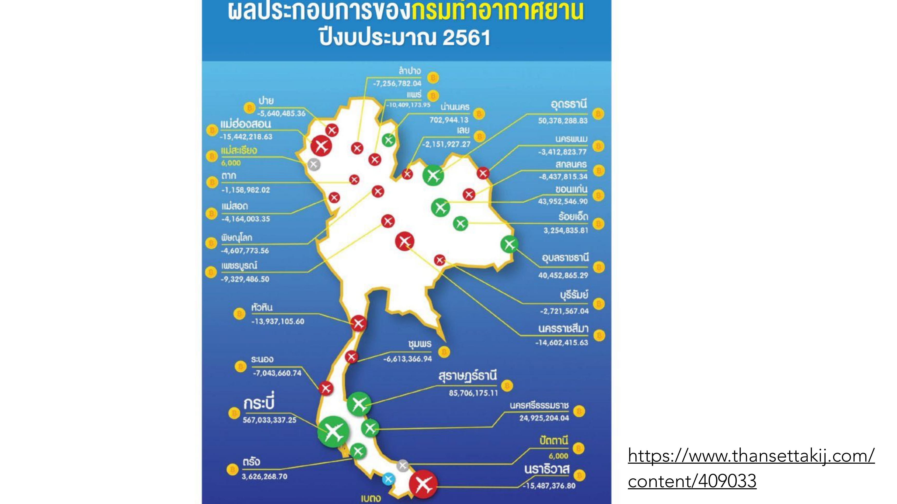
แผนที่นี้ใช้ 3 channel พร้อมกันอย่างสอดคล้องกัน: ตำแหน่ง (position) ของไอคอนเครื่องบินตรงกับตำแหน่งภูมิศาสตร์จริงของแต่ละสนามบิน เฉดสี (hue, แดง/เขียว) บอกหมวดหมู่ขาดทุน/กำไร (เช่น แม่ฮ่องสอน -15,442,218.63 = สีแดง, สุราษฎร์ธานี +85,706,175.11 = สีเขียว) และ ขนาดไอคอน (size) สื่อขนาดของกำไร/ขาดทุนคร่าว ๆ (กระบี่กับแม่ฮ่องสอนมีไอคอนใหญ่กว่าสนามบินอื่นเพราะตัวเลขสูงกว่ามาก) — สังเกตว่า hue ในที่นี้ใช้ถูกหลักการที่เรียนไปแล้ว (แดง/เขียว = nominal, ไม่มีลำดับ แค่สองหมวดหมู่ขาด/กำไร) ในขณะที่ขนาดไอคอนทำหน้าที่สื่อ ordinal (มาก-น้อย) แยกจากกันชัดเจน — นี่คือตัวอย่างเปรียบเทียบก่อนเข้าเนื้อหาว่า channel ที่ถูกต้องกับข้อมูลแต่ละประเภท ทำให้อ่านแผนที่ที่ซับซ้อนนี้ได้ในไม่กี่วินาที.
Slide ยกตัวอย่างจริง 3 กรณีที่ visualization ทำให้ข้อมูล "ดูไม่ตรง" กับความเป็นจริง — จำไว้เป็น checklist เวลาวิเคราะห์ visualization ในข้อสอบ:
| ตัวอย่าง | ปัญหา |
|---|---|
| Fox News 2012 GOP pie chart | 70% + 63% + 60% = 193% — pie chart ที่ผลรวม % เกิน 100% ทำให้สัดส่วนภาพไม่มีความหมายจริง |
| Bar chart ยอดเข้าเว็บไซต์ไทย (Google/YouTube/Facebook…) | ถ้าแกน bar chart ไม่เริ่มที่ 0 ผลต่างระหว่างแท่งจะถูกขยายเกินจริง |
| แผนที่ COVID-19 แบบวงกลมตามจำนวนผู้ติดเชื้อ | ถ้า scale ขนาดวงกลมด้วย "รัศมี" แทน "พื้นที่" ตามค่าข้อมูล ตัวเลขที่มากจะดูใหญ่เกินจริงมาก (พื้นที่ ∝ รัศมี²) |
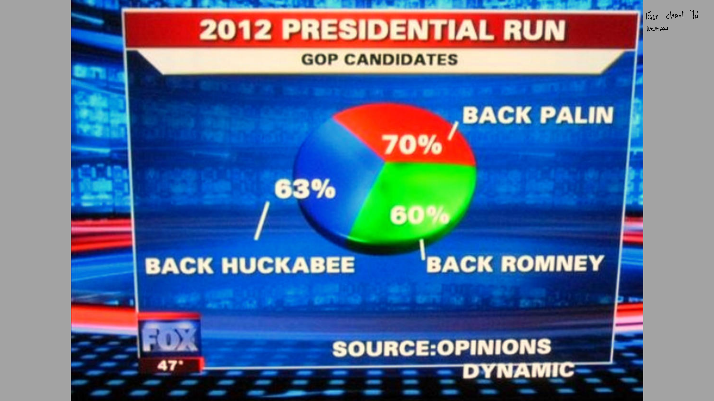
ลองคิดตามเป็นขั้นเป็นตอน: ปกติ pie chart 1 วง = 100% พอเห็นวงกลมถูกแบ่งเป็น 3 เสี้ยว สมองจะเดาอัตโนมัติว่า 3 เสี้ยวนั้นรวมกันได้ 100% แต่ตัวเลขกำกับจริงคือ 70% (Back Palin) + 63% (Back Huckabee) + 60% (Back Romney) = 193% เพราะแต่ละตัวเลขมาจากโพลคนละสำนักที่ถามคนละกลุ่ม ไม่ใช่สัดส่วนของกลุ่มเดียวกัน การเอาตัวเลขที่ "บวกกันไม่ได้" (ไม่ใช่ part-of-whole เดียวกัน) มาวาดเป็น pie chart จึงผิดตั้งแต่เลือกชนิดชาร์ต — นี่คือตัวอย่างที่ต่อให้วาดพื้นที่แต่ละเสี้ยวถูกสัดส่วนตามตัวเลขเป๊ะ ภาพที่ได้ก็ยัง "โกหก" อยู่ดี เพราะตัวข้อมูลเองไม่เหมาะกับชาร์ตชนิดนี้ตั้งแต่ต้น.
ต่อยอดจากปัญหาของ pie chart อาจารย์ให้เทียบข้อมูลชุดเดียวกันในหลายรูปแบบเพื่อโชว์ว่า "การเลือกชนิดชาร์ต" กับ "การจัดเรียง" ส่งผลต่อการอ่านค่าคนละแบบกัน:
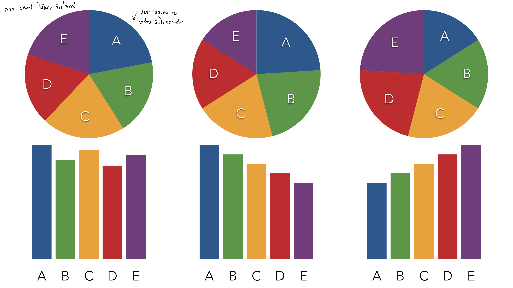
ทั้ง 3 คู่ pie/bar ใช้ข้อมูล A-E ชุดเดียวกันเป๊ะ ต่างกันแค่ลำดับที่จัดเรียง (ตามตัวอักษร A-B-C-D-E / เรียงมากไปน้อย / เรียงน้อยไปมาก) — สังเกตว่า pie chart ทั้ง 3 วง แทบแยกไม่ออกเลยว่าอันไหนจัดเรียงต่างจากอันไหน เพราะการหมุนตำแหน่งเสี้ยวไปรอบวงไม่ได้ช่วยให้เทียบขนาดง่ายขึ้นเลย แต่ bar chart กลับต่างกันชัดเจนมาก: เวอร์ชันเรียงมากไปน้อย (ตรงกลาง) ทำให้เห็นอันดับ A>B>C>D>E ได้ทันทีโดยไม่ต้องเทียบความสูงเอง ในขณะที่เวอร์ชันเรียงตามตัวอักษร (ซ้ายสุด) ต้องกวาดตาเทียบทีละคู่เอง — โน้ตกำกับเขียนไว้ตรง ๆ ว่า "เลือก chart ให้เหมาะกับโจทย์" และ "เหมาะกับดูภาพรวม จัดเรียงเพื่อให้จดจำง่าย" นี่คือบทเรียนสำคัญที่มักถูกมองข้าม: แค่เปลี่ยนลำดับหมวดหมู่ในแกน x (ไม่แตะข้อมูลเลย) ก็ทำให้ bar chart เดิมอ่านง่ายขึ้นได้มาก แต่ pie chart ทำแบบเดียวกันแล้วไม่ได้ผลอะไรเลย.
อีกตัวอย่างหนึ่งแสดงปัญหาตรงข้าม — เมื่อสีถูกใช้แบบ "ใช่/ไม่ใช่" (binary) จนซ่อนความแตกต่างของขนาดชัยชนะไปหมด:
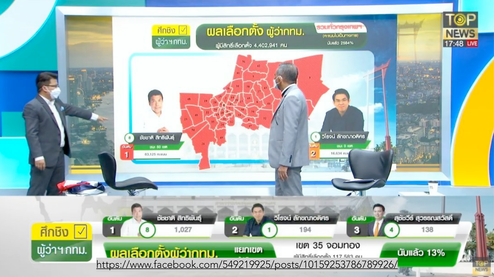
ผู้สมัครหมายเลข 8 (ชัชชาติ) ชนะทั้ง 50 เขตของกรุงเทพฯ ด้วยคะแนนรวม 83,125 เทียบกับอันดับสอง 16,634 — แผนที่จึงระบายทุกเขตเป็นสีแดงเข้มเหมือนกันหมด เพราะใช้ hue แค่บอก "ใครชนะเขตนี้" (nominal, มีผู้ชนะแค่คนเดียวทุกเขต) แต่ปัญหาคือแผนที่นี้ซ่อนข้อมูลสำคัญไปเลย — บางเขตอาจชนะขาดลอย บางเขตอาจสูสีมาก แต่สีแดงเข้มเท่ากันหมดทำให้ดูเหมือนชนะขาดลอยทุกที่เหมือนกัน ทั้งที่ตัวเลข ณ ขณะนั้นนับคะแนนไปเพียง 25.64% เท่านั้น (ยังไม่ใช่ผลสุดท้าย) — นี่คือตัวอย่างของการใช้ hue แบบ nominal ถูกหลักการ (แดง = ผู้สมัครคนนี้ชนะ) แต่พลาดโอกาสใช้ channel อื่น (เช่น ความเข้มสี/ความอิ่มตัวของสี) มาสื่อ "ขนาดของชัยชนะ" (ordinal) เพิ่มเติม ทำให้แผนที่นี้ตอบคำถาม "ใครชนะ" ได้ แต่ตอบคำถาม "ชนะขาดหรือชนะเฉียด" ไม่ได้เลย.
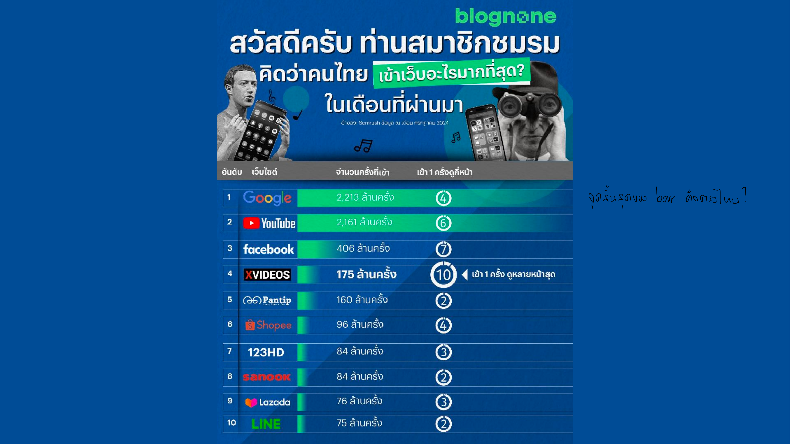
ตัวอย่างนี้ใช้อันดับเว็บไซต์ยอดนิยมของไทยมาทดสอบสมมติฐาน: Google เข้า 2,213 ล้านครั้ง ส่วน YouTube เข้า 2,161 ล้านครั้ง — ต่างกันแค่ ~2% แต่ถ้าแท่งของทั้งคู่ถูกวาดโดยเริ่มแกนที่ 2,000 ล้าน (ไม่ใช่ 0) แท่ง Google จะยาวกว่า YouTube เกือบเท่าตัวในภาพ ทั้งที่ตัวเลขจริงต่างกันนิดเดียว — นี่คือเหตุผลที่คำถาม "จุดเริ่มต้นของ bar ตั้งค่าไหน?" สำคัญมาก: ก่อนจะเชื่อว่าแท่งไหน "ยาวกว่ามาก" ต้องเช็คแกน x/y ก่อนเสมอว่าเริ่มที่ 0 จริงหรือถูกตัดขอบมา.
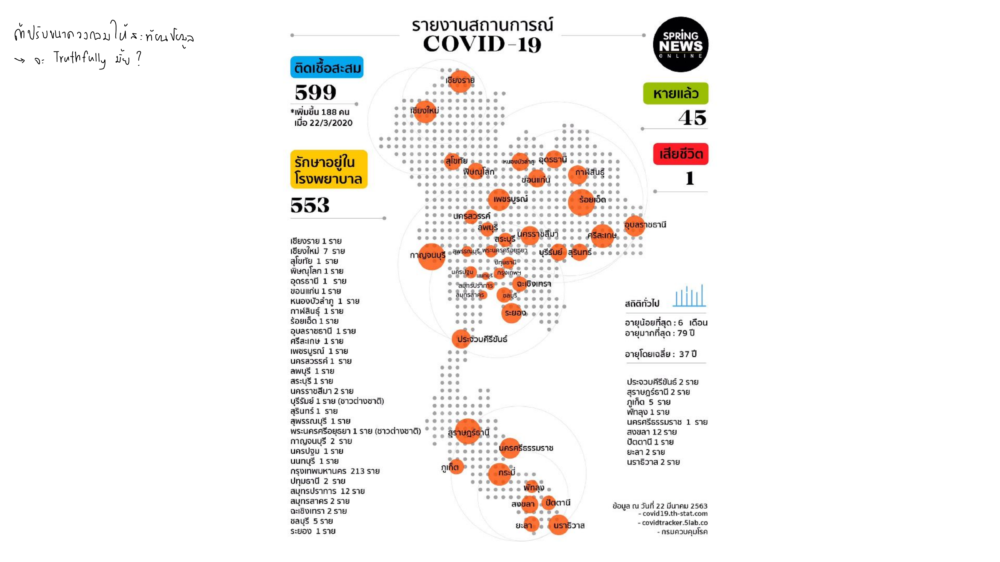
ตัวอย่างจริง: กรุงเทพฯ มีผู้ติดเชื้อสะสม 213 ราย ขณะที่จังหวัดอื่นส่วนใหญ่มีแค่ 1-2 ราย ต่างกันเป็นร้อยเท่า — ถ้าคนออกแบบ map เอา "213" ไปกำหนดรัศมีวงกลมตรง ๆ (รัศมีกรุงเทพฯ = 213 หน่วย, รัศมีจังหวัดอื่น = 1-2 หน่วย) วงกลมกรุงเทพฯ จะมีพื้นที่ใหญ่กว่าจังหวัดอื่นเป็น หมื่นเท่า ไม่ใช่ร้อยเท่า เพราะพื้นที่วงกลมแปรผันตามรัศมียกกำลังสอง — นี่คือเหตุผลที่คำถามในสไลด์ถามว่าวงกลมถูก scale ด้วยรัศมีหรือพื้นที่กันแน่ ถ้าอยากให้ตัวเลขต่างกัน 100 เท่า ดูแล้ว "รู้สึก" ว่าต่างกัน 100 เท่าจริง ๆ ต้อง scale รัศมีด้วยรากที่สองของค่าข้อมูล ไม่ใช่ตัวข้อมูลตรง ๆ.
Visual Mark คือรูปทรงพื้นฐานที่แทนข้อมูล 1 จุด (เส้น สี่เหลี่ยม วงกลม) ส่วน Visual Variable (aka Channel) คือคุณสมบัติที่ใช้ "เข้ารหัส" ค่าข้อมูลลงบน mark นั้น เช่น ความยาว (length) พื้นที่ (area) ความเข้มสี (color brightness) เฉดสี (hue).
Slide แบ่งชัดเจน: ข้อมูล Ordinal (มีลำดับ ต่อเนื่องจาก x ถึง x+a) ควรเข้ารหัสด้วย ตำแหน่ง ความยาว มุม ขนาด หรือความเข้มสี — ทั้งหมดนี้ไล่ระดับได้ตามธรรมชาติ ส่วนข้อมูล Nominal (ไม่มีลำดับ) ควรเข้ารหัสด้วย เฉดสี (hue) หรือรูปทรง (shape) เท่านั้น เพราะสมองไม่สามารถเรียงลำดับสีหรือรูปทรงได้ตามธรรมชาติ.
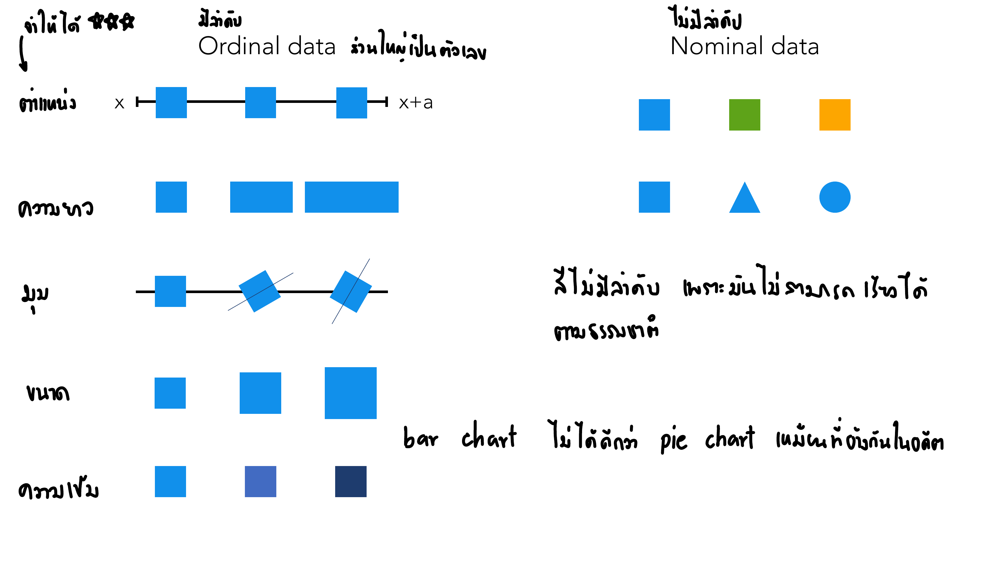
ลองทำแบบทดสอบง่าย ๆ ตามที่สไลด์ตั้งใจสื่อ: มองสี่เหลี่ยม 3 ชิ้นที่ไล่ขนาดเล็ก-กลาง-ใหญ่ คุณจะเรียงลำดับ "น้อยไปมาก" ได้ทันทีโดยไม่ต้องคิด เพราะขนาด/ความยาว/ความเข้มสี ทุกอย่างมีสเกลต่อเนื่องในตัวมันเองอยู่แล้ว (นี่คือฝั่ง Ordinal) แต่ลองมองสี่เหลี่ยมสีฟ้า สามเหลี่ยมสีเขียว วงกลมสีส้มวางเรียงกัน — ไม่มีทางบอกได้ว่าอันไหน "มากกว่า" อันไหน เพราะรูปทรงกับเฉดสีไม่มีสเกลในตัวเอง (ฝั่ง Nominal) ต้องอาศัย legend มาบอกความหมายแทน นี่คือเหตุผลเชิงกลไกที่ทำให้ quiz ข้อ 4 ถามว่าทำไมเฉดสีเข้ารหัสข้อมูลเชิงปริมาณไม่ได้.
งานวิจัยดั้งเดิมของ Cleveland & McGill ถูกทดสอบซ้ำผ่าน crowdsourcing บน Mechanical Turk โดย Heer & Bostock (CHI 2010) และสรุปไว้ใน Tamara Munzner, Visualization Analysis and Design (2014): เรียงจากแม่นยำที่สุดไปน้อยที่สุด — Position → Angle → Circular area → Rectangular area (วัดจาก log error ที่เพิ่มขึ้นเรื่อย ๆ).
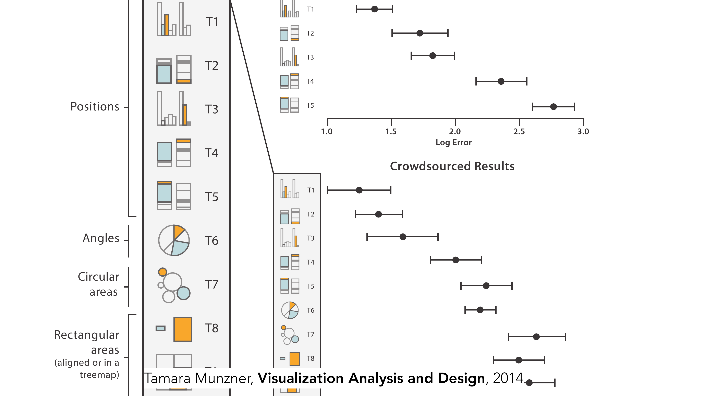
งานทดลองนี้ให้คนอ่านค่าจากชาร์ตหลายแบบแล้ววัดว่า "เดาผิดไปเท่าไหร่" (log error) ผลคือกลุ่ม Position (เช่น จุดบน bar chart หรือ scatter plot) มี error ต่ำสุดอย่างชัดเจน ตามด้วย Angle (เช่น เสี้ยวมุมของ pie chart) แล้วค่อยเป็น Circular area (เช่น ขนาดวงกลมใน bubble chart) และ Rectangular area (เช่น กล่องใน treemap) มี error สูงสุด — แปลเป็นภาษาคนคือ: ถ้าเอาข้อมูลชุดเดียวกันไปทำเป็น bar chart กับ pie chart แล้วให้คนอ่านค่าออกมา คนอ่าน bar chart จะเดาตัวเลขได้แม่นกว่าคนอ่าน pie chart อย่างมีนัยสำคัญ ทั้งที่ข้อมูลเหมือนกันทุกตัว.
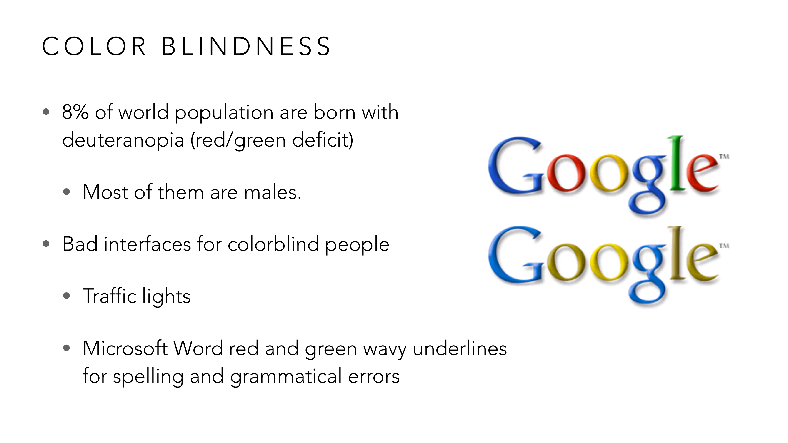
ลองนึกภาพคนที่แยกไฟแดง/ไฟเขียวไม่ออก (deuteranopia พบใน ~8% ของประชากรโลก) ต้องพึ่งแค่ "ตำแหน่ง" ของดวงไฟ (บน/กลาง/ล่าง) ในการขับรถแทนสี — ไฟจราจรออกแบบมาให้พอใช้ตำแหน่งแทนได้ แต่ Microsoft Word ที่ขีดเส้นใต้คำผิดด้วยสีแดง (สะกดผิด) กับสีเขียว (ไวยากรณ์ผิด) ไม่มีสัญญาณอื่นช่วยเลย คนตาบอดสีจึงแยกไม่ออกว่าคำที่ขีดเส้นใต้ผิดแบบไหน — บทเรียนสำหรับตอนออกแบบเอง: ถ้าจะใช้สีแดง/เขียวสื่อความหมายสองอย่างที่ต่างกัน ต้องมีสัญญาณสำรอง (ไอคอน, ตำแหน่ง, ลายเส้น) เสมอ ห้ามฝากความหมายไว้ที่สีคู่นี้เพียงอย่างเดียว.
ปัญหาเรื่องสีไม่ได้จบแค่ระดับสรีรวิทยา — สีบางคู่ยัง "ความหมายไม่เหมือนกันทั่วโลก" ด้วย ต่างจาก position/length ที่ตีความเหมือนกันไม่ว่าใครจะดู:
กระดานหุ้นนี้ใช้ตัวเลขสีแดงกับสีเขียวปนกันเต็มจอ — แต่ถ้าลองเทียบกับตลาดหุ้นสหรัฐฯ ที่ทุกคนคุ้นเคย (เขียว = ราคาขึ้น, แดง = ราคาลง) จะพบว่ากระดานหุ้นญี่ปุ่นนี้ใช้สลับกัน: สีแดงหมายถึงราคาขึ้น ส่วนสีเขียวหมายถึงราคาลง (ธรรมเนียมนี้ใช้ทั่วไปในตลาดเอเชียตะวันออก เช่น ญี่ปุ่น จีน ไต้หวัน เพราะสีแดงเป็นสีมงคล/สีแห่งความเจริญในวัฒนธรรมนั้น) — นี่คือหลักฐานสำคัญว่า hue ไม่ใช่แค่ nominal (แยกหมวดหมู่) เฉย ๆ แต่ยังผูกกับธรรมเนียมทางวัฒนธรรมด้วย คนที่คุ้นชินกับตลาดหุ้นสหรัฐฯ เปิดกระดานหุ้นญี่ปุ่นครั้งแรกอาจตีความราคาขึ้น-ลงผิดทันทีถ้าไม่รู้ธรรมเนียมนี้ก่อน — บทเรียนสำหรับนักออกแบบ: ห้ามสมมติว่าความหมายของสีที่ตัวเองคุ้นเคยเป็น "สากล" เสมอไป ต้องระบุ legend กำกับชัดเจนเมื่อออกแบบสำหรับผู้ชมข้ามวัฒนธรรม.
ตัวอย่างสุดท้ายเป็นกรณีศึกษาประวัติศาสตร์ที่ทั้งโด่งดังและก่อให้เกิดข้อถกเถียงเรื่องจริยธรรมในการออกแบบ:
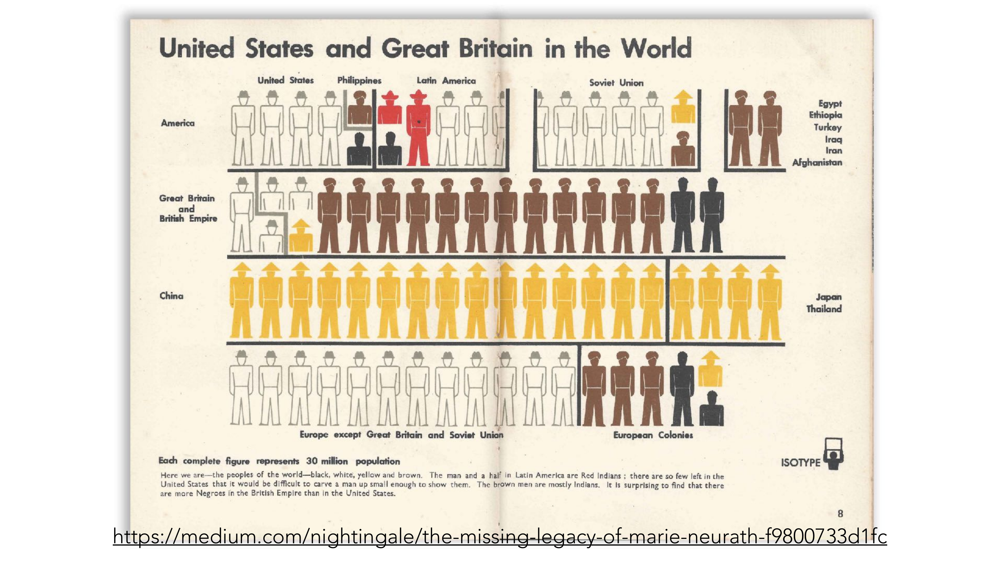
อินโฟกราฟิกนี้ (ระบบ ISOTYPE จากทศวรรษ 1930s-1940s โดยทีม Otto และ Marie Neurath) ใช้หลักการเดียวกับที่เรียนมาตลอดบทนี้: 1 ไอคอนคน = ประชากร 30 ล้านคน (unit-based, เหมือนหลักการ isotype ที่ทำให้นับด้วยตาได้ทันที) แต่ประเด็นที่ทำให้ตัวอย่างนี้ถูกหยิบมาเป็นกรณีศึกษาคือการเลือกใช้ เฉดสี (hue) แทนกลุ่มเชื้อชาติ (ขาว แดง ดำ เหลือง น้ำตาล ตามคำบรรยายใต้ภาพต้นฉบับ) — แม้จะใช้ channel ถูกหลักวิชาการ (hue = nominal, ไม่มีลำดับ) แต่การเลือก "เชื้อชาติ" มาเป็นตัวแปรหลักและระบายสีตามภาพเหมารวมของยุคนั้น สะท้อนมุมมองแบบอาณานิคมที่ล้าสมัยและเป็นปัญหาทางจริยธรรมอย่างมากตามมาตรฐานปัจจุบัน — ตัวอย่างนี้เตือนไว้ล่วงหน้าก่อนถึง Lesson 13 (Current Issues): การเลือก "ตัวแปรอะไรมาลงสี" สำคัญพอ ๆ กับการเลือก "จะใช้สีถูกหลักไหม" เพราะ visualization ที่ถูกหลักเทคนิคทุกอย่าง ก็ยังสื่อสารอคติร้ายแรงได้ถ้าเลือกตัวแปรที่จะเข้ารหัสผิด.
Slide อ้างงานวิจัย "Jurassic Mark: Inattentional Blindness for a Datasaurus Reveals that Visualizations are Explored, not Seen" (Boger, Most & Franconeri, Vis 2021) — ขยายบทเรียนจาก Datasaurus Dozen ใน Lesson 1: การ "เข้าใจ" กราฟไม่ใช่การมองเฉย ๆ (passive seeing) แต่ต้องอาศัยการสำรวจเชิงรุก (active visual exploration) สมองจึงจะจับรูปแบบที่ซ่อนอยู่ได้ — นี่คือเหตุผลที่ pre-attentive attributes (สี ขนาด ตำแหน่งที่เด่นชัด) สำคัญ เพราะช่วยลดภาระการสำรวจนั้นลง.
ไล่ทุกหน้าของ vis-2-perception.pdf — หน้าที่มี ✓ ถูกอธิบายและ/หรือใส่รูปในเนื้อหาข้างบนแล้ว ที่เหลือเป็นตัวอย่างประกอบ/อ้างอิงงานวิจัยที่ไม่ได้ทำ quiz แยก (etc).
| หน้า | เนื้อหา | สถานะ |
|---|---|---|
| 1–2 | ปก + ตารางเรียนทั้งเทอม | etc — บริบทวิชา |
| 3–11 | "What is a good visualization?" เกริ่นนำหัวข้อ | etc — เกริ่นนำ (ลิงก์อ้างอิง) |
| 12 | GPT-5 launch keynote: SWE-bench stacked bar chart | ✓ หัวข้อ 1 (มีรูป) |
| 13 | GPT-5 Deception evals chart — ตัวเลขไม่ตรงกันระหว่างเวอร์ชันสด/ทางการ | ✓ หัวข้อ 1 (มีรูป) |
| 14–15 | (เปลี่ยนหัวข้อ ไม่มีข้อความ) | etc |
| 16 | แผนที่กำไร/ขาดทุนสนามบินไทย (thansettakij.com) | ✓ หัวข้อ 1 (มีรูป) |
| 17 | (เปลี่ยนหัวข้อ ไม่มีข้อความ) | etc |
| 18 | GOOD = TRUTHFUL | ✓ หัวข้อ 2 (มีรูป) |
| 19 | คำถามต่อยอด "Truthfully มั้ย?" (แผนที่ COVID-19) | ✓ หัวข้อ 2 (มีรูป) |
| 20 | คำถาม bar chart เริ่มที่ 0 หรือไม่ | ✓ หัวข้อ 2 (มีรูป) |
| 21 | ตัวอย่าง Fox News 2012 GOP pie chart (193%) | ✓ หัวข้อ 2 (มีรูป) |
| 22 | Pie chart vs bar chart จัดเรียง 3 แบบ (ตัวอักษร/มากไปน้อย/น้อยไปมาก) | ✓ หัวข้อ 2 (มีรูป) |
| 23 | แผนที่ผลเลือกตั้งผู้ว่า กทม. — ทุกเขตสีแดงเดียวกันหมด | ✓ หัวข้อ 2 (มีรูป) |
| 24 | กระดานหุ้นญี่ปุ่น — สีแดง/เขียวสลับความหมายกับตะวันตก | ✓ หัวข้อ 6 (มีรูป) |
| 25 | ISOTYPE "United States and Great Britain in the World" | ✓ หัวข้อ 6 (มีรูป) |
| 26–27 | ตัวอย่างแผนที่/สีอื่น ๆ ที่ตีความผิดได้ (จากข่าว/บล็อก) | etc — ตัวอย่างประกอบเพิ่มเติม (ลิงก์อ้างอิง) ครอบคลุมแนวคิดเดียวกับ p.23-25 แล้ว |
| 28–30 | อ้างอิงงานวิจัยการเลือกสีตามความหมาย (Setlur & Stone 2016; El-Assady et al. 2022; Reda et al. 2021) | etc — อ้างอิงเชิงลึกเรื่อง color mapping นอกขอบเขต quiz หลัก |
| 31 | Chromatic Aberration & Chromostereopsis | ✓ หัวข้อ 6 (อธิบายในเนื้อหา ไม่มีรูปแยก) |
| 32 | Color Blindness | ✓ หัวข้อ 6 (มีรูป) |
| 33–39 | ตัวอย่าง/อ้างอิงเพิ่มเติมเรื่อง color blindness (แผนที่ ECDC, บทความ, Franconeri et al. 2021) | etc — อ้างอิงประกอบ |
| 40–45 | เครื่องมือช่วยเลือกสี (viz-palette, Sim Daltonism) + งานวิจัย photosensitive accessibility | etc — เครื่องมือ/อ้างอิงเสริม ไม่ใช่ทฤษฎีหลัก |
| 46–54 | ตัวอย่าง optical illusion และงานวิจัยการรับรู้สี (Maureen Stone 2012, TED Talk, psmag) | etc — ตัวอย่างประกอบเรื่องการรับรู้ นอกขอบเขต quiz |
| 55 | อ้างอิง "Jurassic Mark" (Boger, Most & Franconeri, 2021) | ✓ หัวข้อ 7 |
| 56 | GOOD = FUNCTIONAL | ✓ ส่วนหนึ่งของบทนำ (แนวคิดในกรอบ Effective/Functional) |
| 57 | Good Visualizations: Effective→Functional, Convincing→Truthful | ✓ บทนำ (มีรูป) |
| 58–61 | นิยาม Visual Marks (ตัวอย่าง [60, 189, 257]) | ✓ หัวข้อ 3 (อธิบายแนวคิดแล้ว ไม่มีรูปแยก) |
| 62 | นิยาม Visual Variables (Channels) | ✓ หัวข้อ 3 |
| 63–65 | Ordinal data vs Nominal data → channel ที่เหมาะสม | ✓ หัวข้อ 4 (มีรูป) |
| 66 | อันดับความแม่นยำการรับรู้ (Position > Angle > Circular > Rectangular area) | ✓ หัวข้อ 5 (มีรูป) |
| 67 | (ว่าง) | etc |
| 68–73 | ตัวอย่าง visual variable แบบ density/animation/sound (นำเข้าสู่หัวข้อถัดไป) | etc — เนื้อหาเดียวกันถูกสอนละเอียดใน Lesson 3 หัวข้อ 2 แล้ว |
สงสัยตรงไหน ถามได้เลยในแชท — ผมเป็นผู้สอนของคุณ ถามซ้ำได้ ถามลึกได้ ไม่ต้องเกรงใจ.